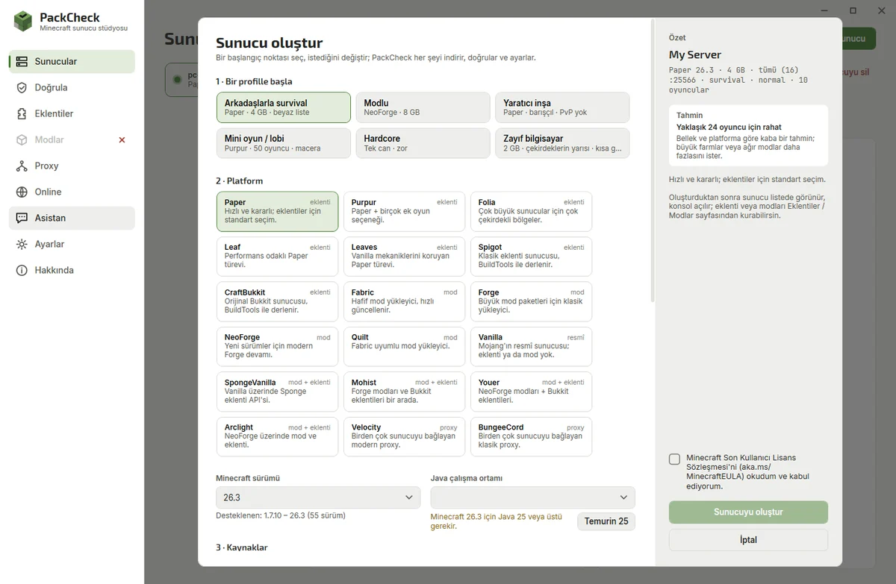

PackCheck › Paper vs Fabric vs Forge
Paper vs Fabric vs Forge (and NeoForge): Which Server to Choose
Minecraft servers come in two families: plugin servers (Paper and friends) that keep the vanilla client, and mod loaders (Fabric, Forge, NeoForge) where players install the same mods. Pick by what you want to add.

| Software | Adds | Players need mods? | Use it when |
|---|---|---|---|
| Paper / Purpur | Plugins | No | Survival with friends, minigames, economy, protection |
| Folia | Plugins (few work) | No | Very large servers on many cores |
| Fabric / Quilt | Mods | Yes | Lightweight or performance mods, new versions fast |
| Forge / NeoForge | Mods | Yes | Big modpacks (tech, magic, adventure) |
| Mohist / Arclight / Youer | Mods and plugins | Yes | You need both (expect some incompatibilities) |
| Vanilla | Nothing | No | The pure official experience |
| Velocity / BungeeCord | Proxy | No | Linking several servers (lobby + survival + minigames) |
PackCheck supports all 18 and lists only versions that really have a download. Its validator tells you when a plugin or mod does not fit the chosen version.
Questions
Is Paper better than Spigot?
For most servers yes: Paper runs Spigot plugins, is faster and gets updates sooner.
Can I use mods and plugins together?
Hybrid servers such as Mohist or Arclight can, but some mods and plugins will conflict. Prefer one family when possible.
Fabric or NeoForge?
Follow the modpack: most big packs use NeoForge or Forge, performance and small mods often use Fabric.